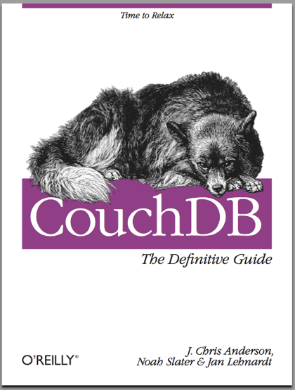

Fun with peer-to-peer Applications and CouchDB
I gave a 45 minute talk at Erlang
Factory on June 10th, 2010.
See my Slides. Video is pending.
Here is roughly how it went:
Jan Lehnardt
@janl
So many projects…
…built around a core idea
80/20
Core Ideas
Building Better Systems
Today: CouchDB’s Core Idea
But first…
Scaling
Scaling Up
Everybody loves it…
…because it’s hard
Geeks Dig Hard Problems
Geeks Dig Hard Problems, applicable or not
Very Few People have Big Data Needs
< 1%
“Scaling is Specialisation” — Joe Stump, (was) lead architect, digg.com
One Size Fits All Scaling?
CouchDB is Built to Scale Up
Impact
Scaling 2
Scaling Down
CouchDB can Scale Down
Small Servers
Routers
Mobile Phones
Google Android
Nokia Maemo/MeeGo
Palm/HP WebOS
iPhone/iPad…ah well
BrowserCouch
Why?
Centralised Past…
TBL
Power
Power to the People
Opera Unite
Project Diaspora
Privacy Matters
People are Ready
Couchin’ Tech Details
JSON Glory
Sub-set
Lossless Interoperable
MappingReducing
MappingReducing: No Math Degree Needed
Real-Time Changes
CouchApps
REST API
Everything has a URL
HTML in the Database
JavaScript in the Database
Ajax in the Browser
Look ma’, no Middleware!
Crazytalk!
Building Less Crap
Building Leaner Systems
Impact
The Big Picture
(finally)
Sync
Sync!
Easy as Pie
Auto-Conflict-Detection (yay)
CouchDB’s Killer Feature
Ubuntu
DesktopCouch
UbuntuOne
Mozilla Raindrop
Mobile?
Local Data is King
Latency Kills
…People’s Patience
The Fastest Computer on the Network is Always `localhost`
Oversubscribed DSL
No Bars
Battery Life
Simpler App Development + Decentralised Operation = <3
All Open, All Standards Based
Bonus Techy Details
Pure Tail Append Storage
Pure Tail Append Storage is Fast
Pure Tail Append Storage is Fast and Robust

Pure Tail Append Storage is Incremental
What Happened Since?
Incremental MapReduce
(No More Full Table Scans)
Incremental Compaction
Incremental Sync
The Book

Thanks!